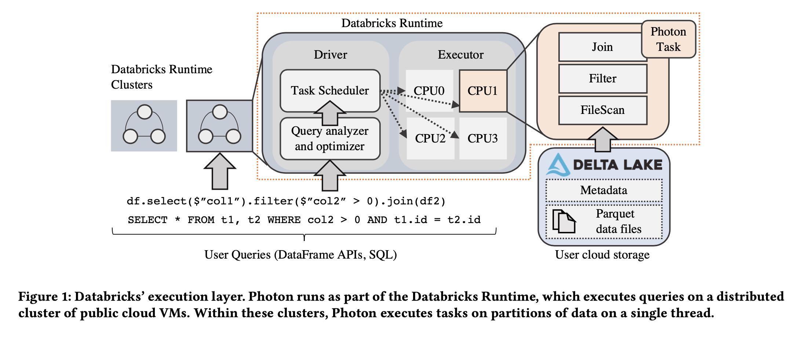
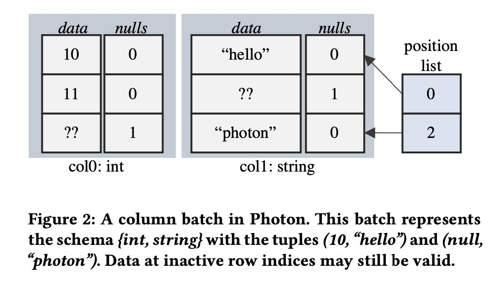
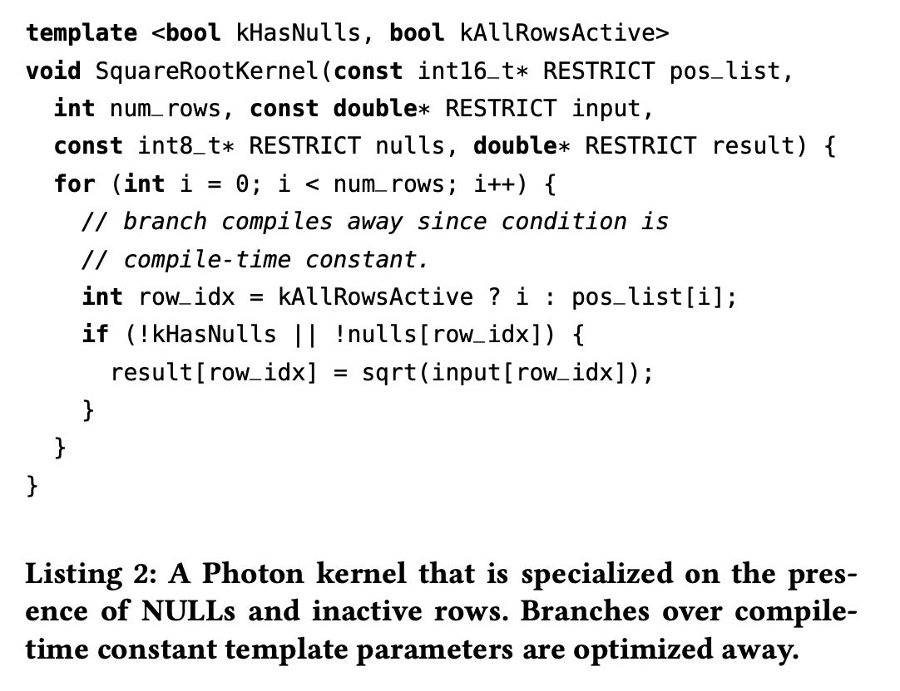
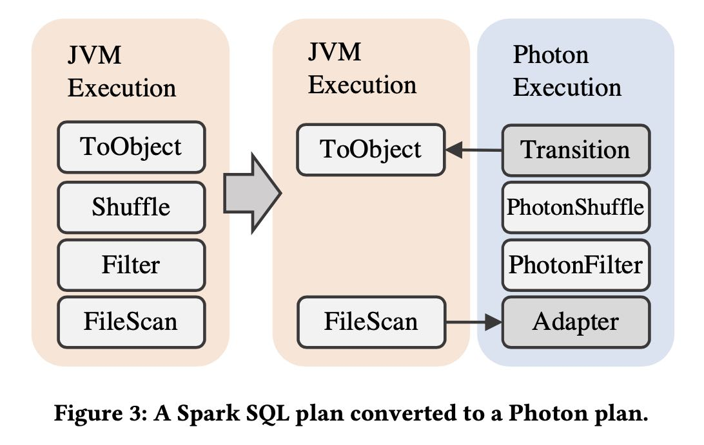

Photon: A Fast Query Engine for Lakehouse Systems
Table of Contents
Photon: A Fast Query Engine for Lakehouse Systems https://dl.acm.org/doi/10.1145/3514221.3526054
文章主要焦点是photon C++执行引擎是如何嵌入到DBR(spark)系统里面去的，整个外层还是使用SparkSQL，在某些算子/计算阶段使用photon, 然后photon将计算结果通过JNI的方式传递回到JVM上。
1. introduction
几个重点：
- 加上photon, 平均3x效果，最好可以到达10x.
- 100TB TPC-DS 世界纪录
- photon需要比较好地处理raw & uncurated data不太规则的数据(delta-lake带来的挑战)
- photon需要和现有spark协同工作（比如和之前operator行为兼容，Java/C++行为之间的差异等）
This paper presents Photon, a new vectorized query engine we developed at Databricks for Lakehouse workloads that can exe- cute queries written in either SQL or in Apache Spark’s DataFrame API [20]. Photon has already executed tens of millions of queries from hundreds of customers. With Photon, our customers have observed average speedups of 3× over our previous Databricks Runtime (an optimized engine based on Apache Spark), and maxi- mum speedups of over 10×. Databricks also set an audited 100TB TPC-DS world record in November 2021 with Photon on a Lake- house system using the Delta Lake format on Amazon S3, showing that state-of-the-art SQL performance is attainable with open data formats and commodity cloud storage.
Designing Photon required tackling two key challenges. First, un- like a traditional data warehouse engine, Photon needed to perform well on raw, uncurated data, which can include highly irregular datasets, poor physical layout, and large fields, all with no useful clustering or data statistics. Second, we wanted Photon to support, and be semantically compatible with, the existing Apache Spark DataFrame API that is widely used for data lake workloads. This was critical to deliver the Lakehouse promise of a single query en- gine with uniform semantics for all of an organization’s workloads, but created difficult engineering and testing challenges. Of course, subject to these two challenges, we wanted Photon to be as fast as possible. We describe how these two challenges led us to Photon’s design: a vectorized engine written in C++, that interfaces cleanly with Apache Spark’s memory manager and that includes a variety of optimizations for raw, uncurated data.
Challenge 1: Supporting raw, uncurated data. 文章里面说需要处理好raw & uncurated data, 指的数据是没有任何统计信息，字段可能出现null, 字符串没有办法判断是ascii/utf8这些限制。有了这些限制其实可以做许多特定优化，所以photon在实现的时候需要考虑更多的special cases. 文章对比了code-generation和vectorized的优劣，以及使用JVM/C++之前的选择。code-generation的问题在于不好调试，不太好观测性能瓶颈等等，而template vectorization虽然人肉多但是控制性好。JVM/C++之间的选择是JVM有诸多限制，JIT限制以及GC限制等等，同样相比C++控制性比较好。
We addressed this challenge with two early design decisions. First, we chose to build the engine using the vectorized-interpreted model in lieu of code generation, unlike Spark SQL’s choice to use code generation [20]. Vectorized execution enabled us to support runtime adaptivity, wherein Photon discovers, maintains, and ex- ploits micro-batch data characteristics with specialized code paths to adapt to the properties of Lakehouse datasets for optimal per- formance. For example, Photon runs optimized per-batch code for columns that rarely have NULL values, or mostly-ASCII string data.
We also observed other engineering advantages with the vec- torized approach. Although we found some scenarios where the code generation model delivers better performance (e.g., complex conditional expressions), our experience while prototyping both approaches and from working on other engines was that the vec- torized model was easier to build, profile, debug, and operate at scale. This allowed us to invest more time in specializations that narrowed the performance gap between the two. Preserving abstrac- tion boundaries such as query operators also facilitates collecting rich metrics to help end users better understand query behavior.
Second, we chose to implement Photon in a native language (C++) rather than following the existing Databricks Runtime en- gine, which used the Java VM. One reason for this decision was that we were hitting performance ceilings with the existing JVM-based engine. Another reason for switching to native code was internal just-in-time compiler limits (e.g., on method size) that created per- formance cliffs when JVM optimizations bailed out. Finally, we found that the performance of native code was generally easier to explain than the performance of the JVM engine, since aspects like memory management and SIMD were under explicit control. The native engine not only delivered a performance boost, but also allowed us to handle large record sizes and query plans more easily.
Challenge 2: Supporting existing Spark APIs. 接入到现有的Spark系统里面去，兼容之前的语义。实现方法就是photon提供一系列算子，spark sql catalyst根据plan判断是否可以使用photon实现。
To accelerate these existing workloads and ensure that SQL workloads on Databricks experience the same semantics as Spark workloads, we designed Photon to integrate with the Spark engine and to support Spark workloads (with a mix of SQL opera- tors and UDFs) as well as pure SQL workloads. This was challenging because Photon had to be able to share resources with user-defined code (as happens in Spark), and had to match the semantics of Apache Spark’s existing Java-based SQL engine.
To address this challenge, Photon integrates closely with the Apache Spark-based Databricks Runtime (DBR). DBR is a fork of Apache Spark that provides the same APIs, but contains improve- ments to reliability and performance. Photon fits into DBR as a new set of physical operators that can be used for part of the query plan by DBR’s query optimizer, and that integrate with Spark’s memory manager, monitoring, and I/O systems. By integrating with DBR at the operator level, customers can continue to run their work- loads unmodified and obtain the benefits of Photon transparently. Queries can partially run in Photon and fall back to Spark SQL for unsupported operations, while Photon features are being contin- uously added to reduce these transitions.
2. background
DBR(spark) 是如何在 delta-lake 上工作的，以及photon在什么地方。下图可以看到整个架构，photon是处于在执行层上，而且只负责计算执行层。spark application称为job, 对于就是一个SQL. job/sql被拆分成为多个stages, 拆分的原则就是有blocking操作比如exchange operator(在starrocks里面就是fragment). 在一个fragment里面执行没有跨越机器，都是在同一个机器上执行的。一个stage被拆分成为多个tasks(可能这里对应的就是fragment里面有多个nodes). task/node可以继续拆分成为operators. photon operator就是这些算子，它的执行环境就是单线程，不用考虑多线层问题。
The Databricks Runtime (DBR) is the component that handles all query execution (Figure 1). It provides all of Apache Spark’s APIs, but contains several performance and robustness improvements on top of the open source codebase. Photon is positioned at the lowest level of DBR, and handles single-threaded task execution within the context of DBR’s multi-threaded shared-nothing execution model.
Applications submitted to DBR are called jobs, and each job is broken up into stages. A stage represents a part of a job that reads one or more files or data exchanges and ends with either a data exchange or a result. Stages themselves are broken up into individual tasks, which execute the same code on different partitions of data. Stage boundaries in DBR are blocking, i.e., the next stage starts after the previous stage ends. This allows fault tolerance or adaptive execution to occur by replaying stages or re-planning queries at stage boundaries.
DBR uses a single driver node for scheduling, query planning, and other centralized tasks. The driver node manages one or more executor nodes, each of which runs a task execution process to scan data, process it, and produce results. This process is multi- threaded, and contains a task scheduler and a thread pool to execute independent tasks submitted by the driver in parallel.

3. design decisions
3.1. overview
photon operator提供了和java operator相同的API调用，这样JVM上面的operator其实不用感知下面是不是photon operator.
Photon is a native (i.e., implemented in C++) execution engine that is compiled into a shared library and invoked from DBR. Photon runs as part of a single-threaded task in DBR, within an executor’s JVM process. Like DBR, Photon structures a SQL query as as tree of operators, where each operator uses a HasNext()/GetNext() API to pull batches of data from its child. This API is also used to pull data from operators that are implemented in Java, using the Java Native Interface [8]. Similarly, operators on top of Photon can pull data from it using this same API. Photon also differs from the Java operators because it operates over columnar data, and uses interpreted vectorization instead of code generation to implement its operators: these differences mean that the in-memory data layout that Photon and the Java operators expect may be different. In the remainder of this section, we motivate these differences between the existing and new engines in more detail.
3.2. jvm vs. native execution
随着locla nvme ssd和auto optimized shuffle加入，整个query的瓶颈从IO挪到了CPU上。但是JVM在CPU优化上存在许多限制和控制性差的问题：JVM对method size有限制，没有办法控制一段代码使用SIMD, GC在大内存上有性能问题等等。这些JVM上的问题导致想把执行引擎使用C++重写。这段内容细节比较多，所以我全部摘抄下来了。
Our decision to move away from a JVM-based engine was rooted in the observation that our workloads were becoming CPU-bound, and that improving the performance of the existing engine was increasingly difficult. Several factors contributed to this. First, low- level optimizations such as local NVMe SSD caching [38] and auto- optimized shuffle [55] have significantly reduced IO latency. Sec- ond, techniques such as data clustering, enabled by Delta Lake, allow queries to more aggressively skip unneeded data via file prun- ing [32], further reducing IO wait times. Finally, the Lakehouse has introduced new workloads that require heavy data processing over un-normalized data, large strings, and unstructured nested data types: this further stresses in-memory performance.
The consequence of this was that the in-memory execution car- ried out by JVM-based execution engine was becoming more of a bottleneck, but squeezing more performance out of it requiring heavy knowledge of JVM internals to ensure that the JIT compiler produced optimal code (e.g., loops that used SIMD instructions). Anecdotally, the only engineers that regularly updated the gener- ated Java code were ones that had worked on JVM internals in the past. In addition, we found that the lack of control over lower-level optimizations such as memory pipelining and custom SIMD kernels also contributed to a performance ceiling in the existing engine.
We also found that we were also starting to hit performance cliffs within the JVM on queries in production. For example, we observed that garbage collection performance was seriously impacted on heaps greater than 64GB in size (a relatively small limit given the memory sizes of modern cloud instances). This required us to use manually managed off-heap memory within even the JVM-based execution engine, leading to code that wasn’t necessarily easier to write or maintain compared to code written in a native language. Similarly, the existing execution engine, which performs Java code generation [54], was constrained by limits on generated method size or code cache size and would need to fall back to a far slower Volcano-style [31] interpreted code path. For wide tables (e.g., 100s of columns, common in the Lakehouse), we hit this limit regularly in production deployments. In all, after evaluating the engineering effort it would require to sidestep the performance ceilings and scalability limitations of the JVM, we chose to implement a native query execution runtime.
3.3. codegen vs. vectorization
vectorization本质上可以更好地利用cpu cache, 而codegen则可以节省掉许多函数调用同时优化寄存器使用，有文章分析出来其实两者效果差不多。但是codegen相比vec存在许多问题： a) 不好debug b) 不好分析性能 c) 没有办法做自适应优化 d) 没有办法做specialized优化。同样这些细节比较多，我也全部摘抄下来的了。
In short, interpreted vectorized engines use a dynamic dispatch mechanism (e.g., virtual function calls) to choose the code to execute for a given input but process data in batches to amortize virtual function call overhead, enable SIMD vectorization, and better utilize the CPU pipeline and memory hierarchy. Code-generated systems do away with virtual function calls by using a compiler at runtime to produce code specialized for the query.
Easier to develop and scale. One early observation for the code generation approach was that it was harder to build and debug. Since the engine generates the executing code at runtime, we would manually need to inject code that would make finding issues easier. In addition, we found that existing tooling (e.g., debuggers, stack trace tools, etc.) were difficult to use without manually adding instrumentation. In contrast, the interpreted approach was “just C++”, for which existing tools are highly tailored. Techniques such as print debugging were also much easier in the interpreted engine.
Interestingly, we found that a majority of the work in using a code generating runtime in the context of a larger system was around adding tooling and observability rather than building the compiler. For example, Weld had a few performance issues that we needed to address before comparing the two approaches, but debugging these issues was difficult without tools such as perf. Anecdotally, it took our engineers two months to prototype aggre- gation with a code-generating engine, and a couple weeks with the vectorized engine.
Observability is easier. Code generation typically eliminates in- terpretation and function call overheads by collapsing and inlining operators into a small number of pipelined functions. Although this is great for performance, it makes observability difficult. For example, it is challenging to efficiently report metrics on how much time is spent within each query operator given that the operator code may be fused into a row-at-a-time processing loop. The vec- torized approach maintains the abstraction boundaries between operators and amortizes overhead by processing batches of data at a time: each operator can thus maintain its own set of metrics. This is especially useful after deploying the engine to customers, since these metrics are the primary interface to debugging performance issues in customer workloads where queries may not be shareable or directly executable by the engine developers.
Easier to adapt to changing data. As we discuss in §4.6, Photon can adapt to batch-level properties by choosing a code-path at run- time. This is particularly important in the Lakehouse context, since traditional constraints and statistics may not be available for all classes of queries. An interpreted-vectorized execution model made adaptivity much easier, since dynamic dispatch is already fundamen- tal to the engine. To achieve the same effect with a code-generating engine, we would have had to either compile a prohibitive number of branches at runtime or re-compile parts of the query dynami- cally, which would impact query execution time, memory usage, etc. Although this is certainly possible, it incurs additional compilation time and startup overhead. In fact, even HyPer [41], the bench- mark for code-generating engines today, includes an interpreter to circumvent these costs under certain scenarios.
Specialization is still possible. Code-generation has clear perfor- mance advantages in some scenarios. For example, complex trees of expressions may be simplified using classic compiler optimiza- tions such as common sub-expression elimination, unused column references may automatically be pruned via dead-store elimination, and problems such as sparse batches of data are non-issues since tuples are processed without interpretation overhead.
3.4. row vs. column oriented
大部分还是使用column格式，但是在一些算子上还是要切换到row上
In practice, Photon does pivot columns to rows in certain scenar- ios. For example, we generally buffer data in data structures such as hash tables as rows, since storing data as columns here requires expensive random accesses when performing operations such as key comparisons during hash table probing.
4. vectorized execution
column表示上有data, nulls， 在chunk级别还有position list. 表示active rows. 这个在active rows比较少的时候有优势。

在编写函数上也用到了 `pos_list` 参数。不过我在想是不是如果有嵌套类型的话，底层 `kAllActiveRows = true`.

内存管理上分为几种管理方式：
- 普通chunk数据从internal buffer pool管理，有点类似column pool.
- 变长字符串使用一个global memory tracker管理，如果内存压力大的话可以调整batch size
- agg/join内存从另外一个external memory manager分配，必要时候需要做spill.
Memory management is an important consideration in any exe- cution engine. To prevent expensive OS-level allocations, Photon allocates memory for transient column batches using an internal buffer pool, which caches allocations and allocates memory using a most-recently-used mechanism. This keeps hot memory in use for repeated allocations for each input batch. Since the query oper- ators are fixed during execution, the number of vector allocations required to process a single input batch end-to-end is fixed.
Variable length data (e.g., buffers for strings) is managed sepa- rately, using an append-only pool that is freed before processing each new batch. Memory used by this pool is tracked by a global memory tracker, so the engine could in theory adjust the batch size if it encounters large strings that it cannot accommodate.
Large persistent allocations that outlive any single batch (e.g., for aggregations or joins) are tracked separately using an external memory manager. We discuss these allocations in more detail in §5. We have found fine-grained memory allocation to be valuable because, unlike the Spark SQL engine, we can more robustly handle large input records that are frequent in our Lakehouse setting.
自适应策略有：
- 动态统计batch特性修改实现方式
- NULLs判断以及kAllRowsActive判断
- all ascii vs. utf8实现
- 自动决定是否需要对chunk做compaction
5. integration with DBR
5.1. spark plans to photon plans
catalyst在产生plan阶段会判断node是否可以映射到photon实现，如果可以实现就用photon node. 如果已经用了photo node的话，那么在不支持的地方需要加一个转换节点，将photon node数据变java node实现。实现JVM实现用的是code generation + row-wise format.
The rule proceeds as follows. First, we walk the input plan bottom up, starting at file scan nodes, and map each supported legacy engine node to a Photon node. When we see a node that Photon does not support, we insert a transition node that converts the columnar Photon format to the row-wise format that the legacy engine uses. We do not transform nodes starting in the middle of the plan to avoid regressions from too many column-to-row pivots. We also add an adapter node between the file scan and the first Photon node: this maps the legacy scan input to Photon columnar batches, but is zero-copy since the scan produces columnar data.

5.2. executing photon plans
几个实现细节:
- JNI之间的数据通过protobuf进行交换
- shuffle的数据由photon定义所以读写都必须是photon write/read
- 在最下面scan节点java reader可以直接产生列式的数据结构，然后通过jni pointer就可以传给photon.
- transition node会将列式结构变为行式结构
After query planning, DBR launches tasks to execute the stages of the plan. In a task with Photon, the Photon execution node first serializes the Photon part of the plan into a Protobuf [6] message. This message is passed via the Java Native Interface (JNI) [8] to the Photon C++ library, which deserializes the Protobuf and converts it into a Photon-internal plan. Internally, the execution plan in Photon looks similar to its DBR counterpart: each operator is a node with a HasNext()/GetNext() interface, and data is pulled (at the granularity of column batches) by a parent node from the child node. Note that Photon runs in the JVM process and communicates with the Java runtime using JNI.
For plans that end with a data exchange, Photon writes a shuffle file that conforms to Spark’s shuffle protocol, and passes metadata about the shuffle file to Spark. Spark then performs the shuffle using this metadata, and a new Photon task (in a new stage) reads the relevant partitions from the shuffle. Since we use a custom data serialization format that is not compatible with Spark’s format, a Photon shuffle write must be accompanied by a Photon shuffle read.
Adapter node to read Scan data. The leaf node in a Photon plan is always an “adapter” node. The Photon adapter node works by taking columnar data produced by Spark’s scan node and passing pointers to this data to Photon. Within Photon, the adapter node’s GetNext() method makes a C++ to Java JNI call that passes a list of native pointers to the JVM. We pass two pointers per column: one to represent the vector of column values, and one to represent the NULL values for each column value. On the Java side, the scan node directly produces columnar data that is stored in off- heap memory via the open-source OffHeapColumnVector [9] class in Spark. Like Photon, this class stores values as primitives back- to-back in off-heap memory, and stores NULLs as an off-heap byte array (one byte per value). Thus, the adapter node just needs to take the pointers provided by Photon and point them to the off-heap column vector memory without copying. We make one JNI call per batch to consume the scan data. We note that, in our measurements, the overhead of making a JNI call is comparable to a C++ virtual function call (roughly 23ns per call).
Transition node to pass Photon data to Spark. The last node in a Photon plan is a “transition”node. Unlike the adapter node, the transition node must pivot columnar data to row data so the row- wise legacy Spark SQL engine can operate over it. Since Apache Spark’s scan always produces columnar data when reading colum- nar formats, we note that one such pivot is required even without Photon. Since we only convert plans to Photon starting at the scan node, adding a single pivot on top of a Photon plan does not cause regressions vs. Spark (both the Spark plan and Photon plan each have a single pivot). However, if we were to eagerly convert arbi- trary parts of the plan to use Photon, we could have an arbitrary number of pivots, which could lead to regressions. Today, we elect to be conservative and choose not to do this. In the future, we may investigate weighing the tradeoff of the speedup Photon would provide vs. the slowdown caused by adding an additional column- to-row pivot.
5.3. unified memory management
内存管理上有个统一的内存管理器，operator可以申请reserve内存，如果内存不够的话那么会要求operator spill.
Photon and Apache Spark share the same cluster and thus must have a consistent view of memory and disk usage to avoid being OOM-killed by the OS or the JVM. As a result, Photon hooks into Apache Spark’s memory manager.
To handle this, we separate the concept of memory reservations from allocations in Photon. A memory reservation asks for memory from Spark’s unified memory manager. Like all requests to the memory manager, this can cause a spill, where Spark asks some memory consumer to release memory to satisfy a new request. Pho- ton hooks into this memory consumer API, so Spark can ask Photon to spill data on behalf of other memory-consuming operators that are executing (e.g., a sort task in Spark may ask a Photon operator to spill). Similarly, Photon can make reservations that cause other Spark operators to spill, or cause Photon itself to spill (leading to a “recursive spill” where one Photon operator spills memory on behalf of another one). This differs slightly from many other data- base engines, where operators are given a fixed memory budget and can only “self-spill.” Spilling is dynamic because we often do not have information on how much data an operator will consume, especially if SQL operators are co-existing with user-defined code that also reserves memory.
5.4. managing on/off heap memory
spark指定了off-heap memory size，并且这个off heap也是从上面unified memory manager里面去申请的。
如果大部分代码都在Photon这边执行，那么JVM这边可能很少会触发GC，内存使用比较高但是不怎么释放掉。如果这个时候Photon要求往JVM写回数据的时候，JVM可能没有办法在短时间分配这么多内存而出现OOM.
所以在实现上可能需要将photon执行时机和spark framework联系起来。这段没有太看懂意思，对里面技术细节不太清楚。
Both DBR and Apache Spark support requesting off-heap and on- heap memory from the memory manager. To manage off-heap memory, the Spark cluster is configured with a static “off-heap size” per node, and the memory manager is responsible for handing out memory from this allocation. It is the responsibility of each memory consumer to only use the memory allocated; overuse can lead to OOM-kills by the operating system.
Unfortunately, just provisioning memory is not sufficient for stable operation. The JVM usually performs garbage collection when it detects high on-heap memory usage. However, with Photon, most of the memory usage is off-heap, so garbage collection seldom occurs. This is problematic if Photon relies on on-heap memory for parts of its query. One example of this is with broadcasts. Photon uses Spark’s builtin broadcasting mechanism to share data with each node in a cluster (e.g., for broadcast hash join). The broadcast mechanism is implemented in Java, so it requires a copy from off- heap Photon memory to on-heap Spark memory. However, this transient memory is not garbage collected frequently, and can lead to Java OutOfMemory errors if some other Spark code tries to make a large allocation. We solved this by adding a listener that cleans up Photon-specific state after the query terminates: this ties Photon state to the lifetime of a query instead of a GC generation.
5.5. ensuring semantics consistency
确保Java实现的spark operator和C++实现的Photon operator是完全相同的，这里面细节比较多，这个需要在测试上保证行为一致。
Another interesting challenge we faced was ensuring that Photon’s behavior was identical to Apache Spark’s. This is because the same query expression can run in either Photon or Spark depending on whether some other part of the query was able to run in Photon, and the results must be consistent. For example, Java and C++ im- plement integer-to-floating point casts differently, which can lead to different results in some scenarios. As another example, many time-based expressions rely on the IANA timezone database [14]. The JVM ships with a particular version of this database, and if Pho- ton were to use a different version, many time-based expressions would return different results.
One specialized fuzz tester we use is for Photon’s decimal imple- mentation. Photon’s decimal differs in behavior from Spark, in that it can operate over inputs of different types for performance (in contrast, Spark always casts its decimal inputs to the output type first, which can leads to worse performance). This difference leads to some unavoidable differences in behavior, which our fuzz tester checks for by using a behavior whitelist.